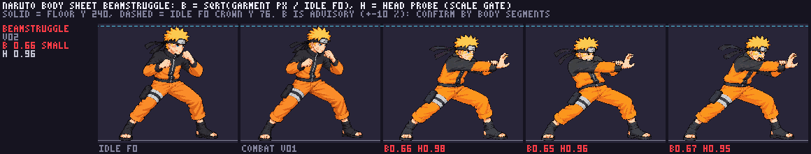
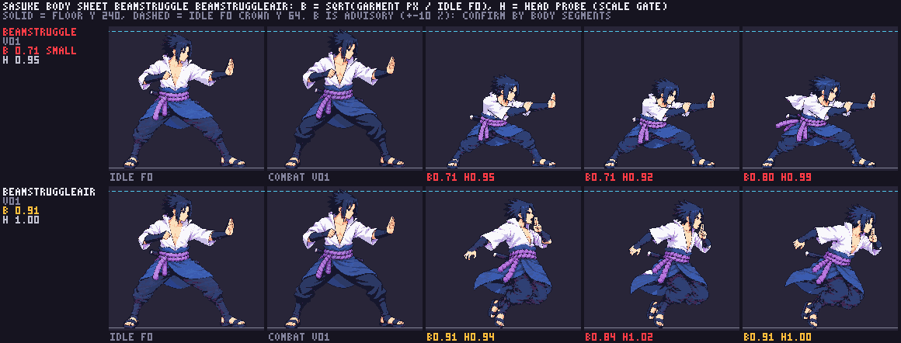
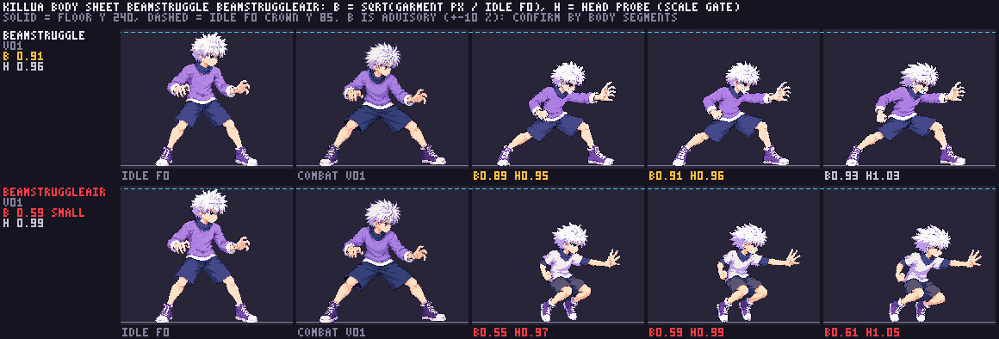
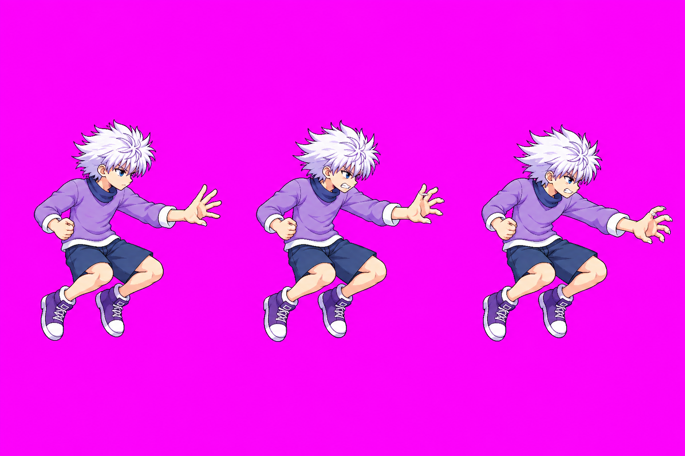
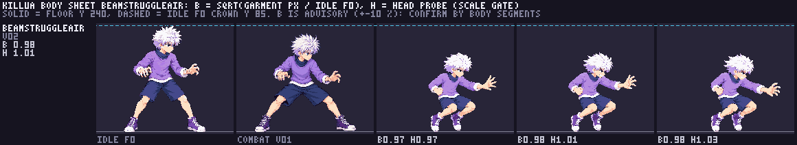
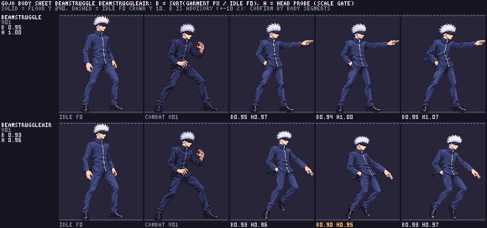

Beam clash struggle poses — round 2
User approved six images via Claude approval desk (relay #7): Naruto v02, Sasuke ground/air v01, Killua ground v01, Gojo ground/air v01. Astra anatomy audit remains pending. Killua air v02 below is a new candidate awaiting your review, not approved.
Each review candidate is shown in its packed, 48-colour game pixels, beside the fighter's approved idle and combat cells at one density (floor = solid line, idle crown = dashed line). H = head size vs the idle (the scale gate), B = body/garment size vs the idle (advisory; a lunge or a hover naturally reads smaller). Naruto's technique palm anchor is [232,124] on all three frames (estimated uncertainty ±3 px).
Size calibrated by Claude (2026-10-15): Sasuke ground bodyHeight 198 → 122, Sasuke air 198 → 168. The six candidates listed for review pass the strict scale gate; Killua air v01 remains a technical hold and is shown only for the record. Astra anatomy audit: pending (the model was unavailable in the Codex chat; CLAUDE.md lets it wait). See them move in a real clash: lab, Sasuke vs Naruto → Scenarios → Beam clash (energy vs energy) or Beam clash from the air (swap fighters with the arrows at the top).
Naruto — beamStruggle v02 (two-handed Rasengan push)
scale gate pass · H 0.95–0.98B 0.65–0.67: crouched lunge, arms forward

Sasuke — beamStruggle v01 (Chidori Spear thrust) and beamStruggleAir v01 (Great Fireball)
ground: gate pass after calibration · H 0.92–0.99ground B 0.71–0.80: reads a little small — your eye decidesair: H 0.94–1.02, B 0.84–0.91

Killua — beamStruggle v01 (Narukami, open palm)
ground: H 0.95–1.03, B 0.89–0.93air v01: held (wrong outfit, body 0.55–0.61); preserved below for record

Only the first row (ground) is approved. The second row is the held v01 air strip, shown for the record.
Killua — beamStruggleAir v02 (Narukami, hovering down-push)
strict quantized scale gate pass · packed 48 colorsbody sheet: H 0.97–1.03, B 0.97–0.99 · no body flagAstra anatomy audit pending · hand anchor awaits exact measurement
New candidate in the correct purple sweater and dark shorts. Knees stay tucked in the hover; the open palm drives down-forward. Compare the raw strip and the packed game-scale frames below.


Open raw v02 · Open packed body sheet. User review is still required; no runtime integration or approval is implied.


Gojo — beamStruggle v01 (Red at two fingertips, hand in pocket) and beamStruggleAir v01
ground: H 0.97–1.07, B 0.94–0.95air: H 0.95–0.97, B 0.90–0.93

Note: in the air strip his legs read as a mid-air kick more than a tucked hover.
Approval recorded
- Naruto beamStruggle v02
- Sasuke beamStruggle v01, Sasuke beamStruggleAir v01
- Killua beamStruggle v01 (air v01 held)
- Gojo beamStruggle v01, Gojo beamStruggleAir v01